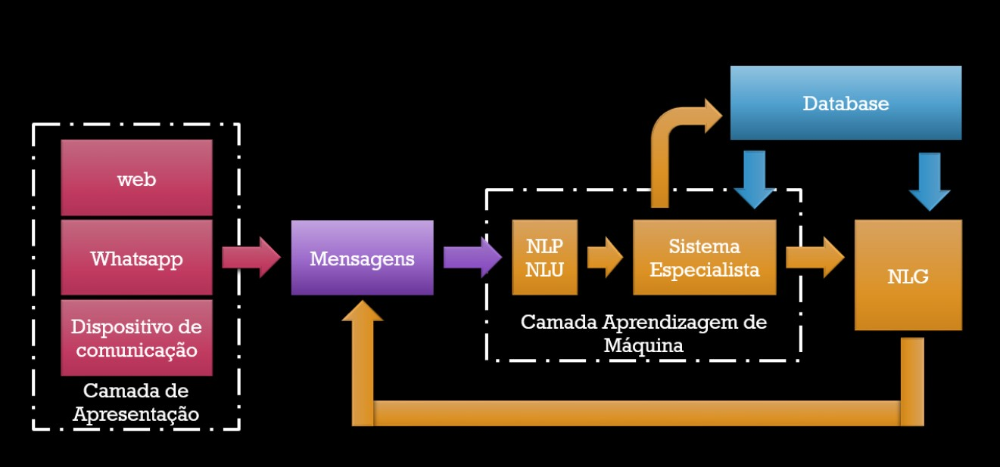

Frank de Alcantara - junho 2020
Um artefato de código que, quando executado, permite a interação entre seres humanos e máquinas usando um conjunto diversificado de canais que podem incluir desde a voz até gestos. Conhecidos como: conversational AI bot, AI assistant, intelligent virtual assistant, virtual customer assistant, digital assistant, conversational agent, virtual agent, conversational Interface, ...
Processamento de Linguagem Natural (NLP)
Geração de Linguagem Natural (NLG)
Entendimento de Linguagem Natural (NLU)
Recebe um conjunto de informações em linguagem natural, divide essa informação em componentes semânticos, produz um nível de entendimento sobre estas informações e determina uma resposta apropriada.
Engloba um conjunto de algoritmos e soluções tecnológicas que permitem que máquinas transformem dados estruturados em linguagem natural, escrita, vocalizada ou sinalizada.
Subconjunto do processamento de linguagem natural que inclui o processamento de uma informação em linguagem natural e permite a extração de sentido desta informação. Este entendimento irá definir a ação a ser tomada.
Em 1950 Alan Turing publicou um artigo denominado Computing Machinery and Intelligence onde discutiu a possibilidade de, algum dia, uma máquina possuir inteligência. Neste artigo, propos um teste para permitir a identificação de uma máquina inteligente. Mais tarde, este teste ficaria famoso como o Teste de Turing.
Em 1950 Alan Turing publicou um artigo denominado Computing Machinery and Intelligence onde discutiu a possibilidade de, algum dia, uma máquina possuir inteligência. Neste artigo, propôs um jogo, o jogo da imitação, para permitir a identificação da inteligência em máquinas por meio da avaliação de textos. Mais tarde, este jogo ficaria famoso como o Teste de Turing.
Uma pessoa, C, faz perguntas a A e B e recebe destes respostas por escrito. Não há contato entre A, B e C e caberá a C dizer se as respostas são originadas de uma máquina ou não.
O Jogo da Imitação, de Turing, provoca várias discussões sobre inteligência. Mas, associa definitivamente a inteligência com a capacidade de comunicação:
Talvez por isso os chatbots sejam populares!
ELIZA em 1966 Joseph Weizenbaum, cria ELIZA. Uma homenagem ao personagem Eliza Doolittle, personagen da peça Pigmaleão de George Bernard Shaw que precisa aprender a falar como gente. Um sistema especialista que substituia as palavras do interlocutor em sentenças pré-definidas. Online
PARRY Criado em 1972 pelo psiquiatra Kenneth Colby que usou como modelo um esquisofrênico para criar uma experiência mais realista de análise. Em 1973 Parry conversou com Eliza.
Jabberwacky em 1988 o programador Rollo Carpenter, cria este chatbot, com humor e com o objetivo de simular inteligência artificial os scripts são interessantes, está no ar desde 1997.
Watson: criado pela IBM em 2006, este chatbot foi nomeado em homenagem ao fundador da IBM, consistia de um conjunto de algoritmos de NLP e NLU aplicados sobre um corpos composto pela Wikipedia e alguns milhares de livros. Apareceu no Fantástico em 2011 quando venceu o Jeopardy.
SIRI: lançada em 2010 como um aplicativo para o iPhone e posteriormente comprado pela Apple. A Siri, é um dos mais populares algoritmos de chatbots disponíveis para o público em geral. Constituído de um conjunto de algoritmos de NLP e NLU fortemente treinados atualizados constantemente.
Google Now: criado pelo Google para os dispositivos Android, hoje mais conhecido como Ok Google! o assistente do Google responde centenas de comandos dos usuários do sistema operacional e ainda integra alguns milhares de serviços via voz.
Alexa: criado em 2015, o chatbot da Amazon, foi o primeiro voltado para o ambiente doméstico. Robou parte da popularidade da Siri e, graças a um esforço de patrocínio da Amazon, controla milhares de aparelhos domésticos, dando sentido a expressão internet das coisas.
Cortana: também lançado em 2015, pela Microsoft, ainda não decolou comercialmente e está encontrando dificuldades de aceitação mesmo entre os usuários do Windows.
Google Now: criado pelo Google para os dispositivos Android, hoje mais conhecido como Ok Google! o assistente do Google responde centenas de comandos dos usuários do sistema operacional e ainda integra alguns milhares de serviços via voz.
Meena: o novo sistema de interação inteligente do Google, que segundo eles, pode falar com terceiros, em nome do usuário do sistema, como uma secretária, sem que o terceiro possa perceber.
Xiaoice: o sistema de interação inteligente da Microsoft, na China, capaz de apresentar programas de rádio e televisão, realizar vendas online e dar conselhos sentimentais. Esta personalidade extrapolou os conceitos de chatbot.
Blenderbot: o chatbot que o Facebook diz ser melhor que o chatbot do Google. Este ano este projeto foi distribuido em código aberto e serve como base para pesquisa de soluções para o português.
Apesar de ser um dos idiomas mais falados do mundo, do ponto de vista da tecnologia, é uma espécie de código secreto.
Algumas empresas grandes como o Bradesco, estão apostando em soluções importadas, como o Watson, para seu atendimento.
A última vez que testei, começo de 2019, as ferramentas apresentadas pelo Google eram as melhores em português.
Baseados em Linguística: desenvolvidos em torno de regras de linguística que permitem corrigir os resultados obtidos com os sistemas puramente baseados em aprendizagem de máquina. São sistemas especialistas detalhadamente criados para permitir a interação em um domínio específico. Implementação difícil e demorada.
Baseados em Aprendizagem de máquina: criados com algoritmos estatísticos supervisionados. Geralmente, passam uma sensação melhor para o interlocutor humano. Hoje, a qualidade depende essencialmente do tamanho do conjunto de dados usado para treinamento. Este é o problema que precisa ser resolvido em português.
Modelos híbridos: um sistema especialista criado com um sistema de aprendizagem de máquina, muitas vezes usando tecnologias de aprendizagem por reforço para controlar um sistema de conversação desenvolvido com aprendizagem de máquina. O sistema especilista resultante melhora a precisão dos processos estatísticos.
de todos os chatbots criados em 2018 foram descontinuados em 2020.
Entendimento: montar uma percepção da intenção do interlocutor por meio do entendimento da interação enriquecida com informações de tempo, posição e contexto.
Memória: lembrança de interações anteriores ou de detalhes pertinentes ao contexto da interação. Pode, por exemplo, oferecer uma pizza, às quintas-feiras à noite.
Análise de sentimentos: percepção da emoção no tom de voz, nas palavras utilizadas e, com ajuda da memória, do contexto recente. Muito usado em interações comerciais no começo de 2020.
Personalidade: características específicas que permitam diferenciar o chatbot. Isto aumenta a confiança do interlocutor e pode ser conseguida apenas com a linguagem.
Persistência: a memória que persiste além da interação atual. Permite, por exemplo, que um processo de interação seja retomado sem a perda de contexto.
Variedade de domínio: o chatbot perfeito, permite que a interação seja feita em contextos relativos a domínios diferentes sem interupção do processo de interação. Podemos perguntar sobre o preço da pizza, pedir uma música que combine ou discutir Sartre.
Todos os chatbots que fracassaram não conseguiram conquistar a confiança do interlocutor por não possuirem uma ou mais das caracteristicas desejadas, ou por não terem uma fonte ilimitada de recursos. Ainda é uma área onde precisamos de muita pesquisa.
COST SAVINGS VIA CHATBOTS TO REACH $7.3 BILLION BY 2023, AS AUTOMATED CUSTOMER EXPERIENCE EVOLVES

Intent: termo usado para identificar a intenção do interlocutor. O objetivo é que o chatbot seja capaz de realizar uma ação determinada assim que identificar a intensão do interlocutor. Uma técnica de identificação de intenção é a classificação de textos. Podemos, por exemplo, transformar um determinado conjunto de textos em vetores, classificar estes vetores em intenções e usar cálculo de proximidade para determinar a intenção de um texto originado no interlocutor.
Entities: ou, entidades. São lexemas, ou conjuntos de lexemas, importantes na mensagem enviada pelo interlocutor. Podem ser nomes próprios, datas, valores, etc. A correta determinação da entidade envolvida na intenção é indispensável para a realização da ação correta. A técnica usada para reconhecimento de entidades é conhecida como NER -Named Entity Recognition está disponível no Spacy. Mas, precisa de um modelo melhor em português.
Aprendizagem supervisionada: uma técnica de aprendizagem de máquina onde pegamos um conjunto de dados identificado e usamos para ajustar os algoritmos de reconhecimento. Dividimos este conjunto em duas partes: treinamento e testes. Usamos o treinamento para ajustar o algoritmo e testes para validar este ajuste. Espera-se que o algoritmo treinado possa identificar um dado qualquer que não estava no conjunto de dados identificado.
Modelo: chamamos de modelo ao resultado do treinamento de um algoritmo de aprendizagem de máquina. Ou seja, o modelo é um algoritmo que é capaz de identificar dados de um determinado domínio. No caso do NER do Spacy, precisamos criar um banco de dados com entidades semanticamente identificadas para poder treinar o algoritmo de reconhecimento de entidades do Spacy em português.
Eficácia: o fator de eficácia de qualquer sistema de inteligência artificial depende da aplicação. Um chatbot para demonstração pode ter pouca precisão. Mas, um chatbot comercial não pode correr o risco de entender errado. Comercialmente, procuramos eficácias acima de 90%.
Luis da Microsoft
Comprehend da Amazon
Natural Language do Google
Watson da IBM
Se for fazer um projeto vai ter que testar os quatro!
No mínimo!
Clique aqui!
A apresentação vai abrir em um formato que permite impressão.
TURING, A. M.. I.- COMPUTING MACHINERY AND INTELLIGENCE. Mind, [s.l.], v. , n. 236, p. 433-460, 1 out. 1950. Oxford University Press (OUP). http://dx.doi.org/10.1093/mind/lix.236.433.
BIOGRAPHY.COM EDITORS (England). Alan Turing Biography: mathematician, educator (1912::1954). Mathematician, Educator (1912–1954). 2019. Disponível em: https://www.biography.com/scientist/alan-turing. Acesso em: 10 junho 2020.